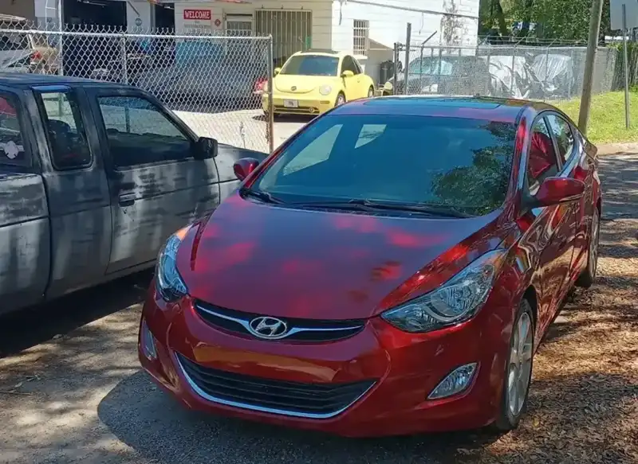
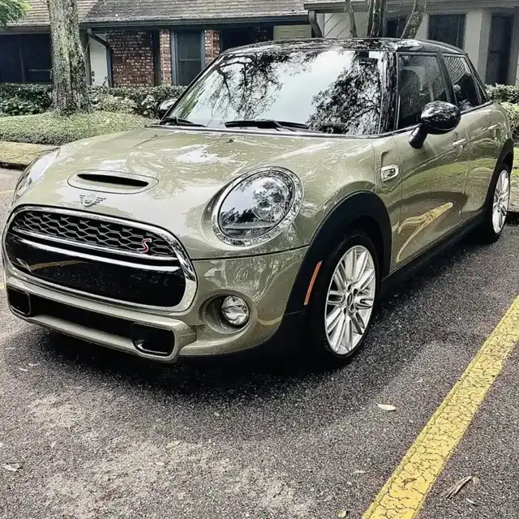
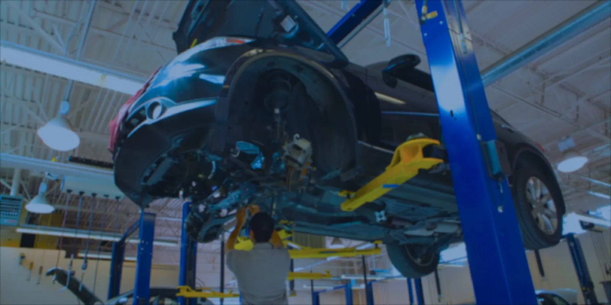

Bay 1
Foreign car repair
Foreign cars are our specialty, from Toyotas to Mercedes roadsters to Minis.
- Imports
- Brakes
- Diagnosis
Foreign car repair · N 22nd St, Tampa
A Tampa shop that explains the problem, quotes fairly and never pushes repairs you don't need.

Since 1972
Foreign car repair, vintage VW parts, batteries and used cars.
Foreign cars are our specialty, from Toyotas to Mercedes roadsters to Minis.
VW work since 1972, from a family who grew up fixing Volkswagens.
A wide selection of parts for vintage Volkswagens. If a part isn't in stock, they work with vendors to find it.
A battery that won't hold a charge, checked over and explained clearly.
Front bumper replacement and other body repairs, done right.
Hard-to-find cars, with the stock changing all the time. Ask what is on the lot.






What customers say
4.6299 Google reviewsThis is the best auto repair shop I’ve encountered in Tampa. After I dropped off my car, Jerry personally gave me a ride home, and when it was time to pick it up, he came and picked me up again. More importantly, Jerry repaired my car the very same day he received it. It makes me proud that USF has alumni like Jerry who demonstrate such professionalism and integrity.
I can’t recommend Jerry enough!!!! I originally came in because I was having battery issues and just needed my battery charged, he took the time to check everything over, explain what was going on and made the whole process stress-free. From that point on, I’ve let him handle all my car repairs because as someone who doesn’t know much about cars, I really appreciated how educational he was.
I had a great experience with Jerry! He replaced the front bottom bumper on my Toyota Highlander and did an excellent job. He was kind, courteous, and very knowledgeable about what needed to be done. Best of all, he was fair and honest with his pricing. Highly recommend his services!
Founded in 1972 by Andy Mastrogiovanni, a VW certified mechanic since 1966. We specialize in foreign repair and stock parts for vintage Volkswagens.
Jerry has been general manager since 1989, an ASE certified mechanic since 1991 and a USF graduate. Kevin, a technician since 1994, brings almost 20 years of dealer experience.

Find us
13301 N 22nd St, Tampa, FL 33612
Open Monday to Saturday. Call ahead about your car or a vintage VW part.